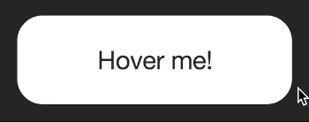

Transitions in action
Now that we have introduced the transition and animation properties, it’s time to delve further into transitions and see some code!
Transitions
Transitions take place in the browser when an element changes from one state to another. The browser draws the frames between each state automatically to create movement.
A transition is a property in CSS. Just as you’d give an element a height, width, or border, we give elements transitions too.
We can write a transition in CSS like this:
transition: background 0.5s linear;
In this case we’re telling the browser that a transition of the background property, will take half a second, and use the “linear” timing function.
The above property might cause a button’s background to change when hovered over:
button {
background: white;
transition: background 0.5s linear;
}
button:hover {
background: green;
}
Notice the transition property to the first button reference in the CSS state. This tells the browser to apply a transition to any change of state such as on hover as well as when changing back from the hover state.
If we applied the transition property to the hover state only, it would only transition to the hover state but not back.
Let’s see how this looks in action. I’ve set up a couple of demos. You might find these examples contain some code that isn’t obvious. I’ll be going into greater detail over the next few days, but do feel free to poke around at the values to see what happens.
Example: Button transition
Here’s a CodePen demonstrating the hover effect. In CodePen, you can make changes to the HTML and CSS and see the results immediately.
The important thing to look for is the any property beginning transition-. I’ve written them out long-hand for demonstration like so:
transition-property: all;
transition-duration: 0.4s;
transition-timing-function: ease-out;
This code that tells the browser what sort of movement to generate between the non-hover state and the hover state. It tells the browser to animate all properties (colours, size, position), over a duration of 0.4 seconds.
Try changing some of these values. For example, change the “0.4s” to something longer, like “2s” (two seconds). How does the animation feel? You could change the property from “all” to “background”.
For a fun effect, try changing the transition-timing-function value from ease-out to:
transition-timing-function: cubic-bezier(.59,-0.26,.33,1.42)
The cubic bezier timing function is a lot of fun. We’ll cover timing functions in more detail on another day.
Homework
Edit the button in today’s example and add your own ideas. You could try changing the shape, border, or almost any property. Have some fun, the goal is to make sure you’re familiar with how a transition affects the element’s hover effect.
For some inspiration check out this awesome hover style. There are loads of great examples around if you are looking for ideas.
If you want to go further, try creating a new CodePen with an element that changes from one thing to another on hover. See if you can have an element within it move at a different rate. Don’t worry if you haven’t got to this point yet, we’ll cover the properties in more detail.